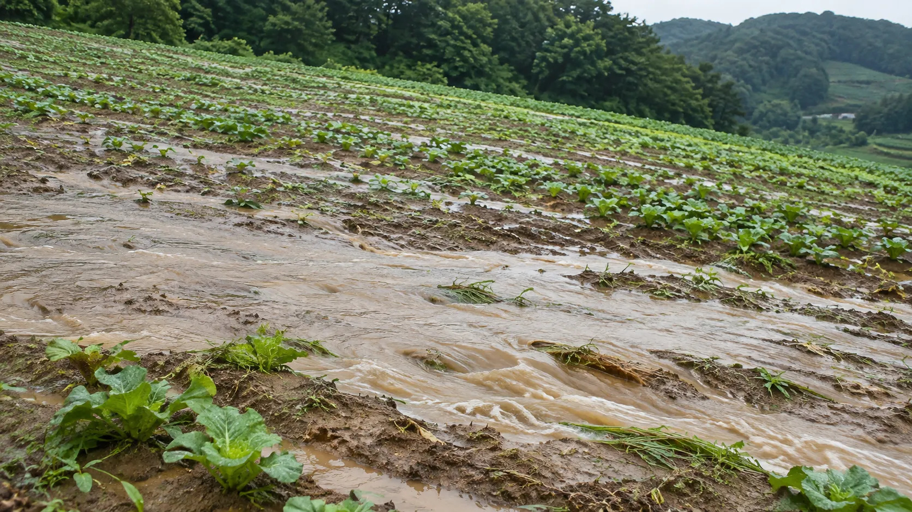

사진 1

01
맨흙이 드러난 밭
이 밭에 맞는 피복재인지 먼저 확인합니다
잔재 피복과 멀칭
수확하고 남은 줄기나 짚, 비닐로
흙 표면을 덮는 방법
흙 표면을 덮는 방법
사진 2

02
수확 후 비어 있는 기간
지역 여건과 다음 작물 재배에
문제가 없는지 확인합니다
문제가 없는지 확인합니다
피복작물 재배
다음 작물을 심기 전까지 빈 땅에
작물을 심어 흙을 덮어 두는 방법
작물을 심어 흙을 덮어 두는 방법
사진 3

03
물이 넓고 얕게 흐르는 밭
공간과 작업 동선,
배출구와 물 고임 상태를 확인합니다
배출구와 물 고임 상태를 확인합니다
완충식생대
밭 가장자리에 풀을 띠처럼 심어
흘러나가는 물과 흙을 붙잡는 방법
흘러나가는 물과 흙을 붙잡는 방법
사진 4

04
물길이 한곳으로 모이는 밭
물이 흐르는 양과 방향 같은
현장 조건을 먼저 확인합니다
현장 조건을 먼저 확인합니다
식생수로
물이 모이는 길에 풀을 심어
물길이 깊게 파이지 않게 하는 방법
물길이 깊게 파이지 않게 하는 방법